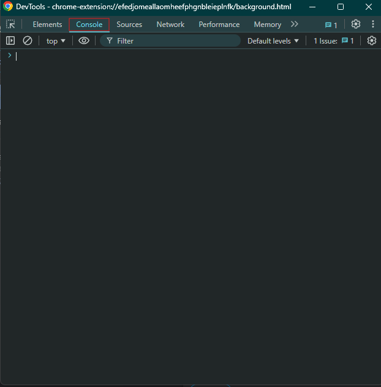

How to remove annoying extensions
- Go to chrome://extensions and turn on Developer Mode

- Navigate to the Inspect views
background page (Service Workers don't work)

- Click on Inspect views and click Console
 - Type in 'close (true); alert ("This extension has been quitted")' or 'window.close(true)'
- Done! Now it will stay until your device restarts. (Credit to Pro_Gamer213 at iogames.fourum